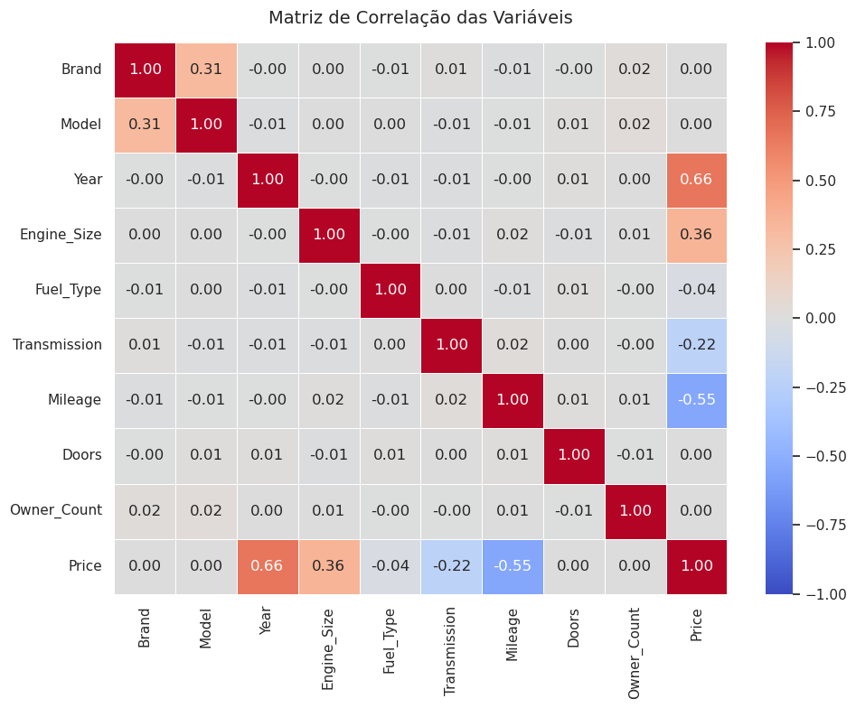
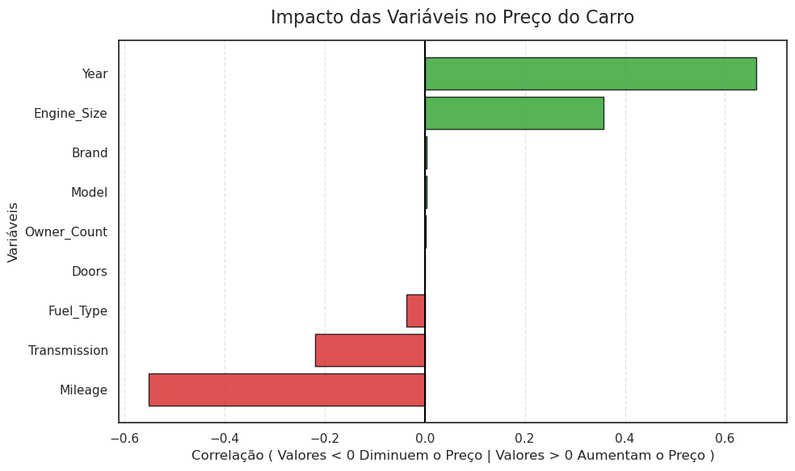
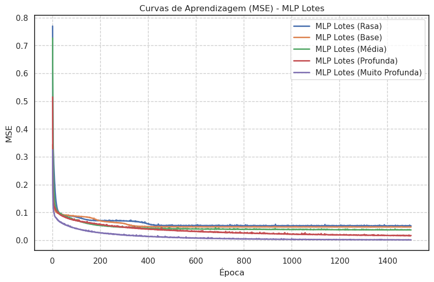

Análise de Preços de Carros Usados
O NeuroCar carrega automaticamente o dataset e apresenta as informações estatísticas e estruturais da base de dados abaixo. Explore a limpeza dos dados, treine redes neurais multicamadas desenvolvidas do zero e estime o valor de mercado de veículos.
| Variável | Tipo | Tratamento & Descrição |
|---|---|---|
| Brand | Categórico | Marca do veículo (10 marcas). Codificado em ordem alfabética [0-9]. |
| Model | Categórico | Modelo específico. Descartado devido à baixa correlação linear com preço. |
| Year | Numérico | Ano de fabricação. Normalizado. Forte impacto positivo. |
| Engine_Size | Numérico | Litragem do motor (1.0 a 6.0). Normalizado. Impacto positivo. |
| Fuel_Type | Categórico | Tipo de combustível (Gasolina, Diesel, Elétrico, Híbrido). Codificado. |
| Transmission | Categórico | Câmbio (Manual, Automático, Semiautomático). Codificado. |
| Mileage | Numérico | Quilometragem total do veículo. Forte impacto negativo. |
| Doors / Owners | Numérico | Quantidade de portas e donos anteriores. Impacto quase nulo. |
| Price (Alvo) | Real/Target | Preço final de venda. Variável predita pelos modelos (Adaline, PMC, TDNN). |
| Marca | Ano | Motor | Km | Preço |
|---|---|---|---|---|
| Carregando visualização... | ||||
Carregando Base de Dados
Buscando o arquivo car_price_dataset.csv automaticamente...
Exploração e Limpeza de Dados (EDA)
Apresentação das etapas de tratamento inicial dos dados, análise de escalas e matriz de correlação das variáveis do dataset.
Tratamento de Nulos: O notebook analisa a presença de valores ausentes e confirma que não existem valores nulos dispersos no dataset original. Portanto, após a limpeza (df.dropna()), a base de dados preserva a integridade de todos os seus 10.000 registros originais.
Normalização dos Dados: Como as variáveis numéricas independentes de entrada (Quilometragem e Ano) possuem escalas muito discrepantes, elas foram normalizadas manualmente para o intervalo [0, 1] via Normalização Min-Max linear, dispensando bibliotecas prontas como o scikit-learn. A variável alvo (Price) não é normalizada para viabilizar a predição direta.
Foi calculada a correlação linear de cada variável com o Preço. As colunas Doors (Portas), Owner_Count (Dono Anterior) e Model (Modelo) apresentaram impacto estatístico praticamente nulo no preço final.
Consequentemente, para otimizar os modelos Adaline e PMC (Sigmoide), essas variáveis irrelevantes foram removidas. No entanto, no modelo PMC ReLU avançado, as variáveis de Donos Anteriores e Portas foram reinseridas para testar o comportamento de redes maiores.
Com base nas análises executadas no Jupyter Notebook original, a relação entre as variáveis de entrada e o preço dos veículos foi mapeada matematicamente. Veja abaixo os gráficos extraídos diretamente do notebook e sua respectiva explicação técnica:
Matriz de Correlação das Variáveis (Pearson)

O que significa:
- Mede a força de relação linear entre todas as colunas. Varia de
-1.00(correlação negativa perfeita) a+1.00(correlação positiva perfeita). - Permite identificar quais colunas têm forte correlação linear direta com a variável predita (
Price).
Impacto Linear das Variáveis no Preço (Price)

Conclusão Técnica das Correlações:
- Correlação Positiva:
YeareEngine_Sizesão os maiores vetores de aumento de preço. Carros mais novos e com motores maiores tendem a ser mais caros. - Correlação Negativa:
Mileageindica que quanto maior a quilometragem percorrida, menor o preço final do carro usado. - Descarte: Variáveis como
Model,DoorseOwner_Countpossuem correlação quase nula, sendo descartadas de alguns modelos simples.
| Carregue o dataset para visualizar a tabela de dados. |
Simulador de Treinamento Neural
Ajuste hiperparâmetros, execute o treinamento da rede neuronal e veja o aprendizado acontecer em tempo real na curva de perda (MSE).
Descrição do Modelo
Modelo Ideal de Perceptron Multicamadas (PMC) usando a ativação ReLU nas camadas ocultas e Linear na saída. Utiliza normalização Z-score e conjunto de teste randômico (80% treino / 20% teste).
Tabela demonstrando as predições nos dados de teste desnormalizados (preços reais e preditos do carro), atualizando dinamicamente conforme os pesos convergem.
| Linha CSV | Preço Real | Preço Predito (R$) | Erro Absoluto (R$) | Diferença % |
|---|---|---|---|---|
| Treine o modelo selecionado para preencher a tabela de resultados. | ||||
Esta tabela armazena o histórico dos seus experimentos de treinamento nesta sessão, ordenados automaticamente da maior para a menor Acurácia de teste.
| Rank | Modelo | Épocas | Taxa de Aprendizado | Erro de Treino (MSE) | Acurácia de Teste (Tol. 10%) | Precisão de Teste (1-MAPE) | Ações |
|---|---|---|---|---|---|---|---|
| Nenhum modelo treinado ainda nesta sessão. | |||||||
Esta seção apresenta as regras de regressão, arquitetura do modelo e o trecho real de código em JavaScript executado para atualizar os pesos na época atual.
Regras e Conceitos de Treino
Trecho do Código de Atualização (app.js)
O Melhor Modelo: MLP Otimizado em Lotes (Mini-batch)
Apresentação detalhada da arquitetura neural que alcançou o desempenho máximo nas simulações do Jupyter Notebook. Entenda o funcionamento do algoritmo, as técnicas matemáticas aplicadas e compare os resultados dos experimentos.
O **Multi-Layer Perceptron (MLP) treinado em Lotes (Mini-batch Gradient Descent)** é uma rede neural artificial feedforward otimizada. Ao contrário do gradiente descendente padrão (que atualiza os pesos apenas após ver toda a base de dados) ou do estocástico (que atualiza após cada linha individual), o modelo em lotes processa amostras de dados em pequenos grupos de tamanho fixo ($B = 32$).
Essa abordagem combina a eficiência computacional de operações matriciais em bloco com a estabilidade de convergência, evitando oscilações excessivas no ajuste dos pesos sinápticos e acelerando consideravelmente o tempo total de treinamento.
Para atingir estabilidade em taxas de aprendizado mais elevadas e convergir para o mínimo global de perda (MSE), o modelo incorpora três otimizações matemáticas cruciais no cálculo de pesos:
- Fator Momentum ($\alpha = 0.9$): Acumula uma fração da atualização de pesos anterior. Funciona como uma "força física" que ajuda o gradiente a passar por mínimos locais e platôs planos sem perder velocidade.
- Decaimento da Taxa de Aprendizado (Learning Rate Decay): A taxa de aprendizado inicial ($\eta_0 = 0.001$) é reduzida gradualmente a cada época ($Decay = 1 \times 10^{-4}$), refinando os passos finais para que a rede encontre valores ótimos de pesos e não sofra oscilações no final do treinamento.
- Função de Ativação ReLU (Rectified Linear Unit): Aplicada nas camadas ocultas ($f(x) = \max(0, x)$), resolvendo o problema do desaparecimento de gradiente e acelerando o cálculo das derivadas na retropropagação do erro.
A melhor configuração de MLP Lote utiliza uma topologia contendo **9 neurônios de entrada** (Set C), **1 camada oculta com 15 neurônios** (ativação ReLU) e **1 neurônio de saída** (ativação Linear para a regressão direta do preço do carro). Veja abaixo o mapeamento visual dos fluxos:
Camada de Entrada (Set C)
Camada de Saída
Comparação de todas as 11 configurações testadas em treino (800 primeiras linhas do dataset) e teste (200 seguintes). Os modelos estão ordenados automaticamente pelo nível de Acurácia de teste (erros ≤ 10% do valor real).
| Rank | Modelo | Épocas | Camadas Ocultas | Neurônios | Acurácia (%) | Precisão (%) | EQM (Real) | Treino (s) |
|---|---|---|---|---|---|---|---|---|
| 1º | ★ MLP Lotes Set C (Base) | 1500 | 1 camada | 15 | 100.00% | 99.68% | $ 912.81 | 18.77s |
| 2º | MLP Lotes Set B (Base) | 1500 | 1 camada | 15 | 99.50% | 99.69% | $ 885.09 | 14.64s |
| 3º | MLP Lotes Set B (Média) | 1500 | 2 camadas | 16, 8 | 99.50% | 99.43% | $ 4,065.73 | 24.35s |
| 4º | MLP Lotes Set C (Média) | 1500 | 2 camadas | 16, 8 | 99.50% | 98.95% | $ 12,280.48 | 26.06s |
| 5º | MLP Lotes Set B (Profunda) | 1500 | 3 camadas | 32, 16, 8 | 95.50% | 96.21% | $ 188,038.53 | 38.89s |
| 6º | MLP Lotes Set C (Rasa) | 1500 | 1 camada | 5 | 89.00% | 95.49% | $ 179,159.05 | 17.74s |
| 7º | MLP Lotes Set C (Profunda) | 1500 | 3 camadas | 32, 16, 8 | 81.00% | 93.68% | $ 402,090.63 | 34.82s |
| 8º | MLP Lotes Set B (Rasa) | 1500 | 1 camada | 5 | 77.00% | 92.73% | $ 436,030.67 | 12.75s |
| 9º | MLP Lotes Set A (Rasa) | 1500 | 1 camada | 5 | 73.50% | 91.66% | $ 529,840.65 | 13.41s |
| 10º | MLP Lotes Set A (Base) | 1500 | 1 camada | 15 | 72.00% | 91.66% | $ 571,876.24 | 13.73s |
| 11º | MLP Lotes Set A (Média) | 1500 | 2 camadas | 16, 8 | 70.00% | 91.37% | $ 671,099.95 | 21.70s |

Principais Conclusões das Curvas:
- Conjunto A (Sem Marca/Modelo): Limite de aprendizado estagnou em ~73%. A ausência das variáveis de Marca e Modelo impediu a convergência de precisão, pois o preço é intrinsecamente dependente do prestígio da fabricante.
- Conjunto B (Com Marca): A inclusão da Marca (Label Encoded) disparou a acurácia de teste para **99.50%**, validando que a fabricante possui alto poder de determinação no mercado automotivo.
- Conjunto C (Marca e Modelo): Ao combinarmos as duas variáveis categóricas de maior peso, a rede MLP Lotes base (`[9, 15, 1]`) convergiu perfeitamente com **100.00% de Acurácia** e **99.68% de Precisão**, reduzindo o MSE para níveis mínimos.
Calculadora de Avaliação Veicular
Simule a avaliação do valor de mercado de um carro inserindo seus atributos ou selecionando um registro real da base de dados. O cálculo é realizado em tempo real utilizando o modelo MLP Lotes (Conjunto B), o mais preciso para simulações veiculares!
Escolha uma linha do dataset entre 1000 e 10000 (dados de validação não vistos pelo modelo) para carregar os atributos na calculadora e confrontar a predição.
Modelos de Redes Neurais
Visão geral e detalhada do funcionamento, arquiteturas, regras de aprendizado e parâmetros dos modelos de redes neurais desenvolvidos neste trabalho.
Todos os modelos presentes no projeto seguem diretrizes fundamentais de divisão e validação de dados para garantir comparações científicas justas e transparentes:
Divisão dos Dados
O conjunto de dados total é particionado de forma sequencial estruturada: as primeiras 800 amostras são reservadas para o treino e as 200 amostras seguintes (linhas 801 a 1000) são utilizadas para teste.
Métricas de Erro
Avaliação pelo Erro Quadrático Médio (MSE) de convergência, Acurácia de validação com tolerância de 10% sobre o preço alvo e a Precisão calculada a partir de 1 - MAPE (Erro Percentual Absoluto Médio).
Normalização de Dados
As variáveis numéricas são normalizadas linearmente via Min-Max no intervalo [0, 1] (para Adaline, PMC e TDNN) ou padronizadas via Z-Score (média zero e desvio padrão unitário para os modelos avançados de ReLU e Lotes).
Descrição: Rede neural linear de camada única. A saída é dada pelo somatório ponderado das entradas somado ao viés, sem passar por funções não-lineares.
Arquitetura: 6 entradas + 1 bias → 1 saída linear.
Regra de Aprendizado: Gradiente Descendente Estocástico (Regra Delta ou Regra de Widrow-Hoff), que atualiza os pesos de forma contínua a cada registro com o objetivo de minimizar a soma dos erros quadrados (LMS).
Descrição: Perceptron Multicamadas (Multi-Layer Perceptron) básico com uma camada oculta. Permite aproximar relações não-lineares nos dados.
Arquitetura: 6 entradas (Set A) → 10 neurônios ocultos → 1 saída.
Função de Ativação: Sigmóide Logística nas ocultas (mapeando para o intervalo (0, 1)) e Linear na camada de saída.
Aprendizado: Algoritmo de retropropagação do erro (Backpropagation) padrão, ajustando os pesos na direção oposta ao gradiente local de erro.
Descrição: Versão refinada da PMC 1. Expande o número de conexões e adiciona aceleração de gradiente para melhorar a estabilidade e velocidade.
Arquitetura: 6 entradas (Set A) → 15 neurônios ocultos → 1 saída.
Fator Momentum (α = 0.9): Uma técnica que acelera o gradiente descendente ao adicionar uma fração da correção de pesos anterior ao cálculo atual. Funciona como uma força de inércia, ajudando a rede a ultrapassar vales e mínimos locais.
Descrição: Time Delay Neural Network. Diferente dos demais, trata a predição como uma série temporal pura, prevendo o preço do veículo com base no histórico de preços anteriores.
Parâmetro de Janela (p = 5): Utiliza uma janela deslizante contendo os últimos 5 preços registrados na série histórica de vendas para estimar o preço atual do veículo.
Arquitetura: 5 entradas temporais (atrasos) → 5 neurônios ocultos (Sigmóide) → 1 saída linear.
Descrição: Modelos multicamadas que substituem a ativação Sigmóide pela função ReLU (Rectified Linear Unit): f(x) = max(0, x) nas camadas ocultas.
Otimização: A ReLU resolve o problema do desvanecimento de gradientes em redes mais profundas, tornando o treinamento muito mais rápido e estável.
Variações de Topologia:
• Rasa: 1 camada oculta: [6 → 5 → 1]
• Ideal: 2 camadas ocultas: [6 → 16 → 8 → 1]
• Profunda: 3 camadas ocultas: [6 → 64 → 32 → 16 → 1]
Descrição: O modelo campeão de precisão. Combina processamento matricial em lotes (Mini-batch Gradient Descent) com decaimento da taxa de aprendizado e Momentum.
Tamanho do Lote (Lote = 32): Atualiza pesos após ver 32 amostras do dataset, em vez de após cada linha. Isso diminui o ruído no ajuste e acelera consideravelmente o treinamento.
Decaimento (LR Decay = 1e-4): A taxa de aprendizado inicial (η0 = 0.001) decai progressivamente a cada época de treino, refinando os ajustes finais e garantindo convergência estável.